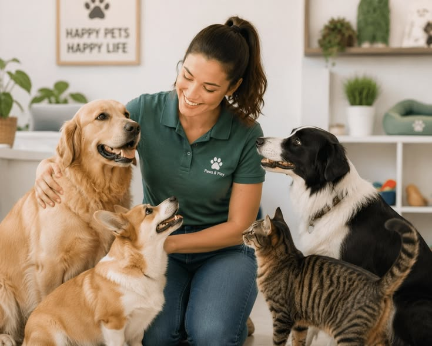

About Pawsitive Pet Academy

Pawsitive Pet Academy is dedicated to helping pet owners and aspiring
animal-care professionals develop the knowledge and skills needed
to care for animals responsibly. We promote kindness, practical
learning and positive relationships between people and their pets.
Our History
Founded in Durban, Pawsitive Pet Academy started with a mission
to bridge the gap between pet owners and professional animal
care practices. Over the years, we have expanded from basic
obedience training to comprehensive vocational courses covering
grooming, health and business skills.
Our Vision
To be South Africa's premier training academy for ethical pet
care, fostering harmonious relationships between pets, owners
and professional service providers.
Our Mission
To empower pet owners and aspiring animal-care professionals
through accessible, high-quality, hands-on educational programs
grounded in positive reinforcement and modern care standards.
Our Goals
-
Provide practical skill development for domestic pet care
and management.
-
Promote humane animal handling and positive reinforcement
training.
-
Support local entrepreneurs in establishing successful
pet-related businesses across South Africa.
Ready to Learn More?
Explore our courses and discover opportunities to develop your
animal-care skills.
Explore Our Courses
```